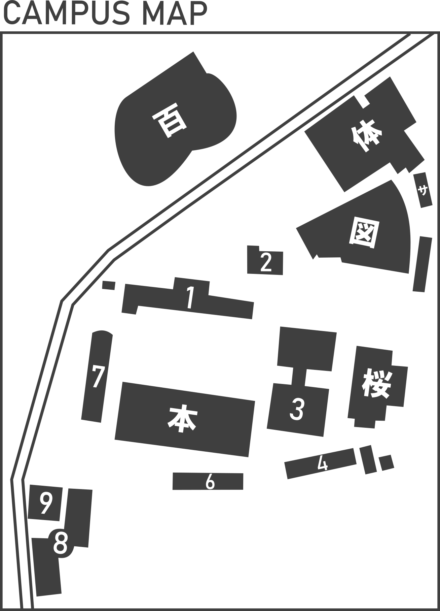

2023年4月10日 新入生歓迎会を行いました。
2023年4月15日 令和5年度定礎検定の詳細を公開しました。
2023年8月15日 違法薬物所持に対する声明を発表しました。
2023年9月20日 当サークルが「実在しない」との流言についての声明を発表しました。
2023年11月6日 定礎祭を開催しました。
2023年11月28日 公式ホームページを開設しました。

私達定礎サークルは、日本定礎学会初代会長の ジョウイシズエ氏 の遺志を継ぎ、
1862年から活動している「石の意思を探る」サークルです。
当サークルはジョウイシズエ氏が設立して以来、学内の定礎認知向上に努めています。
日本大学文理学部6号館 ドライエリア
Q.どうすれば加入できますか？
どなたでもご加入いただけます。SNSのプロフィールに「定礎サークル」とご記入ください。
Q.主な活動内容は何ですか？
学内に存在する定礎を巡って意見を交わしたり、未だに見つかっていない定礎を探索したりしています。
Q.本当に実在するサークルですか？
はい。
Q.本当ですか？
はい。
現在、お問い合わせは受け付けておりません。